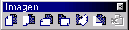

Next: Rotaciones
Up: Dibujar
Previous: Aerógrafo
Índice General
Para reflejar la imagen horizontal o verticalmente se usa el menú
[Modificar], submenú [Reflejar]. Las opciones también se
encuentran en la barra de herramientas Imagen. Si se desea reflejar
sólo una parte de la imagen, se puede seleccionar primero con la
herramienta de selección.
Figura 5.53:
Reflejos
|

|
5.53
Proyecto Cursos - LuCAS - http://lucas.hispalinux.es/htmls/cursos.html